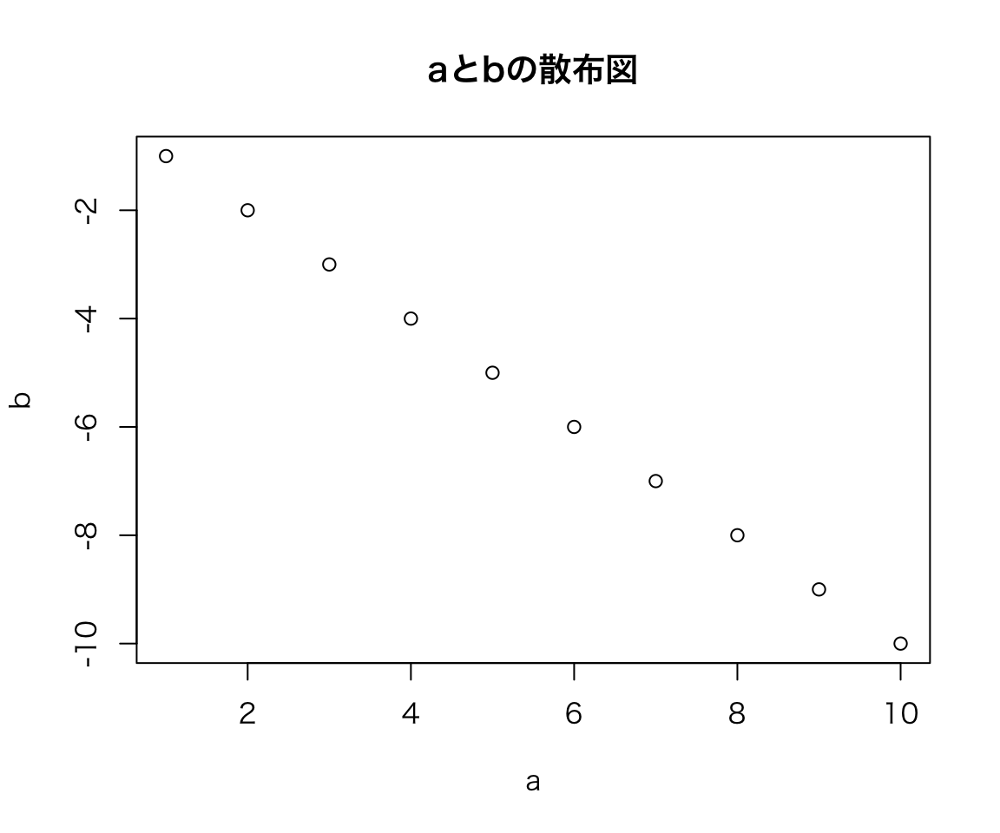
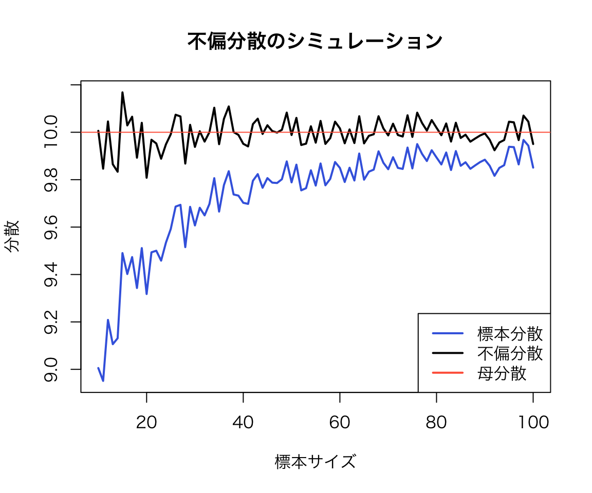

政治学方法論 I：Rマークダウンの例
矢内 勇生
October 15, 2014 (rev. June 6, 2015)
Rマークダウンの使い方
マークダウンファイル (example-Markdown.Rmd) とそのファイルを元に生成されたhtmlファイル（example-Markdown.html) を見比べながら、RStudio でRマークダウンファイルを扱えるようにするのが今日の目標である。
このマークダウンをそのまま使うためには、担当教員が作ったスタイルシート（my-markdown.css）をホームディレクトリに保存する必要がある。 スタイルをカスタマイズしたいなら、このファイルを変更すればよい。 デフォルトのスタイルのままでいいとき（あまり良くないと思うが）は、ヘッダの’css’オプションの指定をやめる（このRmdファイル [htmlではない] の第10行を削除する）。
マークダウン記法を利用した文書の書き方
文章は、いつもどおり書けばよい。 文章の一部をイタリックにしたいときはthis is italic あるいは this is also italic とする。 太字は、ここが太字 または ここも太字 とする。 太字のイタリックは、here is bold italic または here is also bold italic とする。
改行するときは、文章の間を1行以上空ける。
箇条書きは、
- 項目1
- 項目2
- 項目2-1
- 項目2-2
あるいは、
- 項目1
- 項目1-1
- 項目1-2
- 項目2
のようにする。* や - の後は半角スペースを空ける。箇条書きを入れ子ににするとき、字下げはTabで行う
番号付きの箇条書きは、
- First item
- Second item
- What?
- How?
- Third item
のようにする。
また、リンクを貼ることもできる：矢内のウェブサイト。
画像も貼れる： （画像ファイルは、ココ にある）
（画像ファイルは、ココ にある）
{kind=link}
数式の書き方
\(\LaTeX\) と同じように数式を書くこともできる。 文章中と同じ行に数式を書きたいときは、$で挟む。 たとえば、\(\bar{x} = \sum_{i=1}^n x_i / n\) と、する。 数式を独立したブロックとして書きたいときは、$$で挟み、 \[\sigma^2 = \frac{\sum_{i=1}^n (x_i - \mu)^2}{n}\] のようにする。
コードチャンクの書き方
Rのコードは、コードチャンクと呼ばれる部分に書き込む。 コードチャンクは、たとえば以下のように書ける。
a <- 1:10
b <- -1:-103つの「`」の後に、{r}をつける。 rとスペースの後には、チャンクの名前を付ける。 好きな名前を付けてよいが、他のチャンクとまったく同じ名前は付けられない。
文章中にRコードを書きたいときはmean(x) のように書く。 関数を実行（評価, evaluate）した後の結果を文章中に入れたいときは、「\(a\) の平均値は5.5 です」のように“r”を入れて書く。
図を含めた文章も作れる。
plot(a, b, main = "aとbの散布図")
何もオプションを指定しない状態では、チャンクは1行ずつ評価され、結果も順番に次々出力される。 たとえば、
sd(a)## [1] 3.02765var(a)## [1] 9.166667チャンクの最後まで評価してからまとめて結果表示したいときは、チャンクオプション**results* を’hold’にする。 オプションは、チャンク名の後に「,（comma）」を打ち、その後に書く。
sd(a)
var(a)## [1] 3.02765
## [1] 9.166667チャンクオプションについてより詳しくは ココ などを参照されたい。
（ついでに）Rによるシミュレーション
分散と不偏分散
変数\(X\)の母分散が\(\sigma^2\)だとする。 このとき、\(X\)の標本分散を \[s^2 = \frac{\sum_{i=1}^n (x_i - \bar{x})^2}{n}\] とすると、 \[\mathrm{E}(s^2) = \frac{n-1}{n} \sigma^2\]となる。 つまり、\(s^2\)は\(\sigma^2\)の不偏推定量ではない。 代わりに、\[u^2 = \frac{n}{n-1}s^2 = \frac{\sum_{i=1}^n (x_i - \bar{x})^2}{n-1}\] が\(\sigma^2\)の不偏推定量になる。 このことは簡単に証明できるが、ここではRでシミュレーションを行うことによって、本当にそうなるかどうか確認してみよう。
シミュレーション条件の設定
まず、シミュレーションの条件として、サンプルサイズ (\(n\))、シミュレーションの繰り返し回数 (trials)、真の母分散の値 (\(\sigma^2\)) を決める。 また、シミュレーションの結果を保存するための変数を用意する。
n <- 10 ## sample size
trials <- 1000 ## number of samples
sigma2 <- 10 ## True Variance
## prepare vectors to save the results
s2 <- rep(NA, trials)
u2 <- rep(NA, trials)ここまでで準備ができたので、実際にシミュレーションを行う。 ここでは、for ループを利用する。
for (i in 1:trials) { ## シミュレーションを実行するループ
x <- rnorm(n, sd = sqrt(sigma2)) ## N(0, sigma^2)からの無作為抽出
s2[i] <- sum((x - mean(x))^2) / n ## 標本分散の計算
u2[i] <- sum((x - mean(x))^2) / (n - 1) ## 不偏分散の計算
}
rm(x)シミュレーションが終わったので、結果を確認してみよう。
## variance
mean(s2) ## 標本分散の平均値## [1] 9.190591mean(u2) ## 不偏分散の平均値## [1] 10.21177このように、\(s^2\) (s2) は真の値よりも小さめの値を出してしまうことがわかる。
関数を定義してシミュレーションを効率的に行う
上の例では、シミュレーションの条件を変更するたびに複数のコードを実行し直す必要があって不便である。 そこで、シミュレーションを1行でやり直せるよう、シミュレーション用の関数を定義する。
sim_var <- function(n, trials, true.var) {## 不偏分散をシミュレートする関数
## 引数 (arguments)：
## n = サンプルサイズ
## trials = シミュレーションの繰り返し回数
## true.var = sigma^2 （真の母平均）
## 返り値 (return)：ベクトル(s2, u2)
s2 <- rep(NA, trials)
u2 <- rep(NA, trials)
for (i in 1:trials) { ## シミュレーションを実行するループ
x <- rnorm(n, sd = sqrt(true.var)) ## N(0, true.var) からの無作為抽出
s2[i] <- sum((x - mean(x))^2) / n ## 標本分散を計算する
u2[i] <- sum((x - mean(x))^2) / (n - 1) ## 不偏分散を計算する
}
s2 <- mean(s2) ## 標本分散の平均値を計算する
u2 <- mean(u2) ## 不偏分散の平均値を計算する
return(c(s2, u2)) ## ベクトルを返す
}これで、関数が定義できた。
この関数を使ってシミュレーションを行ってみよう。 まず、\(n=5\) の場合は、
sim_var(n = 5, trials = 1000, true.var = 10)## [1] 8.027553 10.034441これでシミュレーションの結果が出た。
\(n\)の値を10に変ると、
sim_var(n = 10, trials = 1000, true.var = 10)## [1] 8.959179 9.954643この関数を使って、複数の\(n\)についてのシミュレーションを一挙に行う関数を新たに定義しよう。 ここでは、シミュレーションを行いたいうちで最も小さな\(n\)の値n.min と最も大きな値 n.max を与えたとき、その間（端点を含む）にあるすべての\(n\)についてシミュレーションを実施する関数を作る。
sim_var2 <- function(n.min = 1, n.max, trials = 1000, true.var){
## 引数：n.min = 最も小さなn, 既定値は1
## n.max = 最も大きなn
## trials = シミュレーションの繰り返し回数, 既定値は1000
## true.var = sigma^2 （真の母平均）
## 返り値：行列（行数 = nの数, 列数 = 3）
## 入力がおかしいときはエラーを出す
if (n.min < 1) stop("Error: n.min には1以上の整数を指定してください")
if (n.max < 1) stop("Error: n.max には1以上の整数を指定してください")
if (trials < 1) stop("Error: trials には1以上の整数を指定してください")
if (true.var<0) stop("Error: true.var には0以上の実数を指定してください")
## シミュレーションに利用するn
n.vec <- n.min:n.max
## 結果を保存するための行列
output <- matrix(NA, ncol = 3, nrow = length(n.vec))
## ループを使ってシミュレーションを実施する
for (i in 1:length(n.vec)) {
## 既に定義済みの関数を利用する
## i 行目にi番目のシミュレーション結果を保存する
## 1列目にはnの値を保存
output[i, 1] <- n.vec[i]
## 第2列に標本分散、第3列に不偏分散を保存する
output[i, 2:3] <- sim_var(n = n.vec[i], trials = trials, true.var = true.var)
}
return(output)
} これで、関数ができた。
ためしに、\(n = 10, 11, \dots, 100\)について、この関数を使ってシミュレーションを実行し、結果を図示してみよう。
sim1 <- sim_var2(n.min = 10, n.max = 100, trials = 1000, true.var = 10)
plot(sim1[,1], sim1[,2], type = "l", col = "royalblue", lwd = 2,
ylim = c(min(sim1[,2:3]), max(sim1[,2:3])),
xlab = "標本サイズ", ylab = "分散",
main = "不偏分散のシミュレーション")
lines(sim1[,1], sim1[,3], type = "l", col = "black", lwd = 2)
abline(h = 10, col = "tomato")
legend("bottomright", legend = c("標本分散","不偏分散", "母分散"),
col = c("royalblue", "black", "tomato"), lty = 1, lwd = 2)